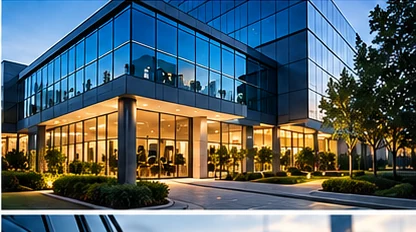

Sua empresa preparada para disputar contratos de segurança empresarial.
A IMPUSEG estrutura aquisição e conversão para empresas deste segmento, conectando presença no Google, páginas de alta intenção, site, CRM e automação comercial.
Quero uma análise da minha empresa
O desafio não é apenas gerar contato. É chegar ao decisor certo.
Neste mercado, a empresa disputa vendas B2B em que confiança, escopo, SLA, cobertura, experiência e capacidade de atendimento precisam estar claros. Isso torna a presença digital parte do processo comercial: antes de responder, o potencial cliente pode pesquisar a empresa, comparar fornecedores e avaliar se a estrutura transmite segurança.
Por isso, a estratégia precisa separar aquisição de conversão. SEO e páginas de serviço ajudam a capturar demanda; site, prova, velocidade de resposta, CRM e follow-up ajudam a transformar essa demanda em proposta e contrato.
Como trabalhamos o crescimento em segurança empresarial.
SEO B2B para segurança empresarial
Essa frente é integrada ao restante da jornada para evitar ações isoladas e melhorar a qualidade das oportunidades.
páginas por setor atendido
Essa frente é integrada ao restante da jornada para evitar ações isoladas e melhorar a qualidade das oportunidades.
materiais e site para decisão corporativa
Essa frente é integrada ao restante da jornada para evitar ações isoladas e melhorar a qualidade das oportunidades.
Uma página para cada intenção relevante — não páginas duplicadas.
A arquitetura deve refletir o que a empresa realmente vende e onde atende. Termos de serviço, aplicações, públicos e localidades podem exigir páginas próprias quando representam intenções diferentes. Quando a intenção é a mesma, consolidar costuma ser melhor do que criar páginas concorrendo entre si.
Também trabalhamos links internos entre serviços relacionados e conteúdos educativos. Isso ajuda o usuário a avançar e dá aos mecanismos de busca uma estrutura mais clara sobre especialidades, contexto e relacionamento entre páginas.
Conhecer o SEO para segurançaDa busca ao contrato.
Descoberta
O potencial cliente encontra uma página coerente com o serviço ou problema que pesquisou.
Confiança
O site explica escopo, atuação, diferenciais e oferece um próximo passo claro.
Processo
O contato entra em uma rotina comercial com qualificação, proposta, follow-up e acompanhamento.
Continue pela estrutura de aquisição e vendas.
Dúvidas sobre crescimento em segurança empresarial
Como conseguir mais clientes para segurança empresarial?
A estratégia deve combinar presença nas buscas relevantes, páginas específicas para o serviço e regiões atendidas, geração de oportunidades e acompanhamento comercial. Para segurança empresarial, o conteúdo também precisa transmitir confiança e explicar claramente a operação.
SEO funciona para empresas de segurança empresarial?
Pode funcionar quando existe aderência entre as páginas criadas e as buscas reais do público. O trabalho deve priorizar intenção de busca, relevância local, conteúdo útil, estrutura técnica e autoridade, evitando páginas repetitivas criadas apenas para inserir palavras-chave.
Por que usar CRM no processo comercial?
Porque contratos e projetos raramente fecham no primeiro contato. Um CRM ajuda a acompanhar propostas, retornos, responsáveis, próximos passos e motivos de perda.
Quer identificar onde sua empresa está perdendo oportunidades?
Responda algumas perguntas rápidas. O WhatsApp será aberto com os dados da sua empresa e a origem desta página.